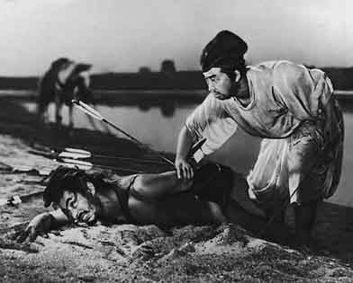
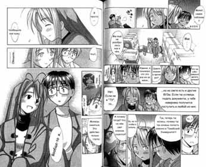

Cinema
The history of Japanese cinema dates back to about 1900, when the first type and feature films with a very primitive plot were created. In total, there were two types of films: those whose plot was taken from the kabuki theater (the story of a samurai sacrificing his life for the sake of his master) or from kodan - historical tales (the samurai avenges the death of his parents).
Nevertheless, by the end of the 30s, the credibility of cinema, thanks to the created masterpieces, had grown so significantly that it gained supporters among the yakuza (Japanese mafia). In the 50s, Japanese cinema came out on top in the world for the production of films.
In the 60s, Japanese cinema is experiencing a crisis, and the most massive (and
|
favorite) genre is the yakuza eiga(films about organized crime). Neither the introduction of the wide screen (since 1957) nor widescreen cinema (since 1961) helped. Most of the box office was made up of American films. Nevertheless, one cannot fail to mention a number of unsurpassed films by the brilliant director Akiro Kurosawa: "Rashomon", "Seven Samurai", "Red Beard" |
|
By the 1980s, the crisis situation worsened even more. The number of cinemas compared to the 60s decreased by 7 times. The advent of video films has dramatically reduced the number of their visitors. However, one cannot fail to note the policy of the authorities aimed at reviving the interest of the general public in visiting cinemas. Advertising campaigns, a system of discounts, excellent equipment of modern cinemas, comfortable seats, etc. attract a large number of viewers. |
 |
Currently, among the products of Japanese cinematography, documentaries and full-length multi-part cartoons - anime are popular in the world.
|
Speaking of cartoons, although, in principle, despite their "drawing", the language somehow does not turn to call it cartoons, it has its own name: Japanese animation is anime. It does not turn because the quality of the drawing is at the highest level, if you want to make sure - watch the anime film "Jin Ro" ("Wolf Pack") and you will understand what I mean. In the 50s and 60s, Japanese animators learned a lot from their colleagues in the USSR. Soviet films such as The Snow Queen are now considered classic examples of animation. |
But the Japanese were able to go further, and our animators, at best, remained at the same level.
Unfortunately, anime in Russia is known for absolutely no TV series known as "Pokemon", but there are many other most beautiful films and TV series with a completely non-childish plot, which for some reason our "kindest" television does not play.
|  |
The picture above with an anime-style girl: one of the main characters of one of the most amazing anime of all time "Neon Genesis Evangelion" named Asuka. As a rule, anime is made from manga (Japanese comics (usually black and white)). Picture on the left: a piece from Love Hina manga (taken from www.manga.ru, to be honest - my favorite site). Traditional manga is read from top to bottom and left to right. |